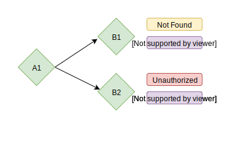

How do we handle errors in Scala today?
Similar to IO[Either[E, A]] but “short-circuits” when you have a Left
leftWidenThrowable (IO.die)void method1() throws E1 { ... }
void method2() throws E2 { ... }
void onlyE1Handled() throws E2 { // E2 not handled, must declare!
try {
method1();
method2();
}
catch (E1 e1) { ... }
}
void allHandled() { // All errors handled!
try {
method1();
method2();
}
catch (E1 e1) { ... }
catch (E2 e2) { ... }
}import shapeless._
type E123 = E1 :+: E2 :+: E3 :+: CNil
// Similar to Either[E1, Either[E2, Either[E3, CNil]]
import shapeless.syntax.inject._
val e1InCoproduct: E1 :+: E2 :+: E3 :+: CNil = E1().inject[E1 :+: E2 :+: E3 :+: CNil]
// e1InCoproduct: E1 :+: E2 :+: E3 :+: CNil = Inl(E1())
val e2InCoproduct: E1 :+: E2 :+: E3 :+: CNil = E2().inject[E1 :+: E2 :+: E3 :+: CNil]
// e2InCoproduct: E1 :+: E2 :+: E3 :+: CNil = Inr(Inl(E2()))
e2InCoproduct match {
case Inl(E1()) => println("it's E1!")
case Inr(Inl(E2())) => println("it's E2!")
case Inr(Inr(Inl(E3()))) => println("it's E3!")
case Inr(Inr(Inr(cnil))) => cnil.impossible // To satisfy exhaustiveness check
}
// it's E2!Let’s extract a particular cases from a coproduct!
import shapeless.ops.coproduct._
// Returns a Left(E1()) if we have an E1
Remove[E1 :+: E2 :+: E3 :+: CNil, E1].apply(e1InCoproduct)
// res8: Either[E1, E2 :+: E3 :+: CNil] = Left(E1())
// Otherwise return the rest in Right(..)
Remove[E1 :+: E2 :+: E3 :+: CNil, E2].apply(e1InCoproduct)
// res9: Either[E2, E1 :+: E3 :+: CNil] = Right(Inl(E1()))…and you can do many, many things with Coproducts!
Using Coproducts directly feels cumbersome
Can we make it nicer?
A library for type-safe, ergonomic and readable error handling!
Coproducts can be a bit tedious to read and write, so Hotpotato provides some type aliases for coproducts
import hotpotato._
import shapeless.syntax.inject._
import zio._
val io: IO[OneOf3[E1, E2, E3], Unit] = IO.fail(E1().inject[OneOf3[E1, E2, E3]])
// Turn every error into String
val resString: IO[String, Unit] = io.mapErrorAllInto(
(e1: E1) => "e1",
(e2: E2) => "e2",
(e3: E3) => "e3",
)
// Turn every error into some other type
val result: IO[OneOf2[X2, X1], Unit] = io.mapErrorAll(
(e1: E1) => X1(),
(e2: E2) => X2(),
(e3: E3) => X1(),
)Very often error recovery/handling requires side-effect (e.g. logging)
import hotpotato._
val ioE123: IO[OneOf3[E1, E2, E3], String] = ???
val fallbackIO: E1 => IO[Int, String] = ???
val result: IO[OneOf3[Int, E2, E3], String] = ioE123.flatMapErrorSome(
(e1: E1) => fallbackIO(e1),
)flatMapErrorAll, flatMapErrorAllInto are provided for exhaustive handling too
We often have a series of steps and each step may have different errors
import hotpotato._
val ioE1: IO[E1, Unit] = ???
val ioE23: IO[OneOf2[E2, E3], Unit] = ???
// An embedder tells the compiler what types we want all errors to embed to
implicit val embedder: Embedder[OneOf3[E1, E2, E3]] = Embedder.make
val result: IO[OneOf3[E1, E2, E3], Unit] = for {
_ <- ioE1.embedError
_ <- ioE23.embedError
} yield ()Easy conversion from/to sealed traits
| ChckEx | EitherT | ZIO | With Hotpotato | |
| Composable | ||||
| Error type unification | ||||
| Open error union | ||||
| Handling - Exhaustive | ||||
| Handling - Partial |
Let’s look at an example

How should we model the errors for B1 and B2?
sealed trait B1Errors
sealed trait B2Errors
case class Conflict() extends B1Errors with B2Errors
case class NotFound() extends B1Errors
case class Unauthorized() extends B2Errors